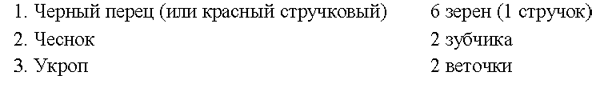
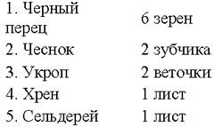
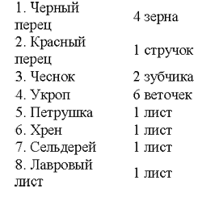
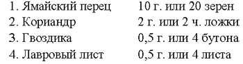

Смеси пряностей для овощных блюд и для приготовления овощей в кисло-сладком маринаде
 I. Смесь трех пряностей
I. Смесь трех пряностей

II. Смесь пяти пряностей

III. Смесь восьми пряностей

Смесь пряностей для фруктов в кисло-сладком маринаде (на 2 литра воды)
Смесь пряностей для рассола «саламур», применяемого при мариновании мяса

В первой пропорции эта смесь разводится в 10 л воды С добавлением 1 кг соли; во второй — в 10 л воды с добавлением 6 стаканов соли. Полученным рассолом заливают мясо (рубленное крупными, многокилограммовыми кусками) на 84 часа (на 3,5 суток), после чего мясо либо приготавливают как жаркое, либо вялят и коптят для хранения впрок.
Как видно из приведенных рецептов, молдавская и близкие ей румынская, болгарская, а также венгерская и югославская кухни комбинируют пряные овощи и пряные травы с классическими пряностями, причем в целом создают довольно слабую концентрацию, усиливаемую лишь повышенной жгучестью красных перцев, которая тем более возрастает при использовании соляного или уксусного раствора как основы смеси. Особенно широко применяют красный перец в пастообразных смесях в Болгарии и Румынии, где он наряду с томатной основой играет доминирующую роль. В этих пастообразных смесях, называемых лютеницами, всегда присутствуют лук, чеснок, соль и виноградный уксус. Сухие смеси пряностей в странах Юго-Восточной Европы и в нашей Молдавии практически не применяются.
Богата сухими пряными смесями среднеазиатская кухня, кстати сказать, почти не употребляющая уксуса и пастообразных смесей.
В состав большинства пряных смесей, употребляемых в Узбекистане, Туркмении, Таджикистане и Киргизии, чаще всего входят:
1. Черный перец
2. Красный перец
3. Куркума (зарчава)
4. Базилик (райхон)
5. Ажгон (зира)
6. Кориандр (кинза)
7. Чеснок
К этой «великолепной семерке» в зависимости от местности, целей и желания могут быть добавлены чабер, мята, дикий лук, лавровый лист, а также не являющиеся пряностями растения, дающие либо кислый, либо вяжущий привкус пряной смеси: барбарис (сухие ягоды, называемые по-местному «зирк») и бужгун (высушенные недозрелые галлы[15] листьев фисташкового дерева). Все эти дополнительные компоненты можно добавить или частично заменить одним из них какой-либо или несколько из семи основных компонентов, за исключением красного перца, черного перца, ажгона, которые непременно должны остаться во всех составах. Смеси с наибольшим количеством компонентов используют во всевозможные овощные блюда, а также во все супы, кроме молочных. При этом для супов исключают барбарис и куркуму, способные при нагревании (особенно кипячении) испортить жидкое блюдо. Обычно указанные компоненты берут для приготовления смеси в равных частях, но иногда одна из пряностей может значительно преобладать над остальными, быть базой для смеси. Обычно такой базой является лук, а кроме него, чеснок и зира, преобладающие в смесях, употребляемых для приправы ко вторым мясным блюдам среднеазиатской кухни, особенно к пловам. Для приготовления плова обязательно потребляют порошок для зирвака, состоящий из взятых в равных частях красного перца, зиры и барбариса и незначительного количества куркумы (на кончике ножа).
Порошок для зирвака добавляют в зирвак плова (то есть в мясо с морковью и луком, тушенное в перекаленном масле), следовательно, до того как в плов кладут рис, в середине приготовления, примерно за полчаса до готовности плова. На 5 головок лука средней величины берут обычно по 1 чайной ложке молотого красного перца, зиры и барбариса. Это количество пряностей рассчитано примерно на 2 килограмма сырых продуктов (1 килограмм — рис, по 0,5 килограмма мяса и моркови). Но такой расчет является средним. Общая норма закладки пряностей в плов значительно выше, потому что помимо закладки в зирвак смеси трех пряностей в конце приготовления в готовое блюдо можно добавить смесь из семи пряностей, состав которой указан выше. При этом умелый подбор пряностей и их сочетание с жирными (мясо, растительное масло) и нейтральными (рис, овощи) продуктами обеспечивает мягкое, эластичное восприятие всего кушанья нашими органами осязания и обоняния, в результате чего все блюдо не кажется острым.
Было бы неверно полагать, что применение смесей пряностей характерно исключительно для народов Азии — родины большинства пряностей. В Европе, в том числе Западной и Центральной Европе, также применяются традиционные, постоянные сочетания пряностей. Однако они не носят ныне столь ярко выраженного национального характера, как азиатские смеси. В течение многих веков вследствие интенсивного общения западноевропейских народов и культивирования ресторанной кухни, на которую огромное влияние оказало французское кулинарное искусство, национальные различия в применении пряностей сгладились, в результате чего в Западной Европе сложились более или менее общие для большинства стран комбинации пряностей. Эти комбинации сохранили свои первоначальные названия, связанные с местом их создания или производства, но применяются они в блюдах, ставших почти интернациональными. Таковы болонская, уорчестерская, франкфуртская, гамбургская и другие смеси. Характерной чертой европейских смесей пряностей является их ограниченный, а вернее целенаправленный диапазон применения. В отличие от китайских смесей, которые можно одинаково успешно использовать в мясные, рыбные, овощные блюда, в кондитерские изделия и блюда из дичи, европейские смеси имеют строго определенное, резко ограниченное применение — отдельно для мяса, рыбы, сладких блюд и даже отдельно для различных видов мяса. Это результат и дифференцированности вкуса, и совершенно иного подбора пряностей, их сочетаний и соотношений. В основном западноевропейская кухня ориентируется на классические пряности.
Ниже мы приводим наиболее распространенные и ставшие традиционными смеси.